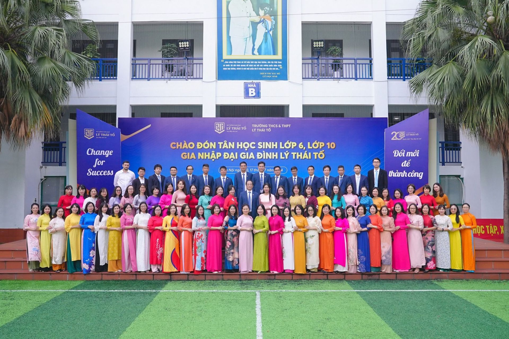

Trường THPT Lý Thái Tổ
Tên doanh nghiệp, tầm nhìn và sứ mệnh
Trường THPT Lý Thái Tổ tại Hà Nội thuộc Hệ thống giáo dục Lý Thái Tổ, được Tổng công ty Vinaconex sáng lập và đầu tư từ năm 2004 theo mô hình chất lượng cao. Tầm nhìn của hệ thống là trở thành cơ sở giáo dục tư thục uy tín hàng đầu của Thủ đô Hà Nội, tiếp tục bồi dưỡng trí đức cho các thế hệ học sinh, vun đắp ước mơ đưa tài năng và nhân cách Việt tỏa sáng trên bản đồ quốc tế.
Lịch sử hình thành và phát triển

Trường được thành lập vào ngày 21/7/2004 theo quyết định số 4582/QĐ-UB của UBND Thành phố Hà Nội, ban đầu mang tên trường THPT Dân lập Lý Thái Tổ. Ngày 4/4/2013, trường chuyển sang loại hình tư thục với tên gọi chính thức là trường THPT Lý Thái Tổ.
Sơ đồ tổ chức và hình thức kinh doanh

Trường THPT Lý Thái Tổ hoạt động theo mô hình trường tư thục, thuộc Hệ thống giáo dục Lý Thái Tổ. Bộ phận quản lý cao nhất của trường là Hội đồng Quản trị, tiếp đến là Hội đồng Giáo dục và Ban Giám hiệu. Dưới Ban Giám hiệu là các tổ bộ môn như Tổ Tự nhiên, Tổ Xã hội, Tổ Anh văn - Thể dục - Nhạc họa, cùng các phòng ban chức năng như Bảo vệ - Giám thị, Văn phòng Giáo vụ - Thư viện, Đoàn đội, và Trung tâm Hợp tác Quốc tế.
Với sứ mệnh đào tạo học sinh phát triển toàn diện về đức, trí, thể, mỹ, trường THPT Lý Thái Tổ đã và đang đóng góp tích cực vào sự nghiệp giáo dục của địa phương và cả nước.